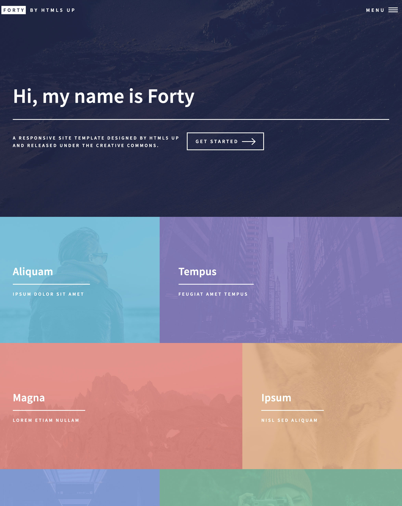
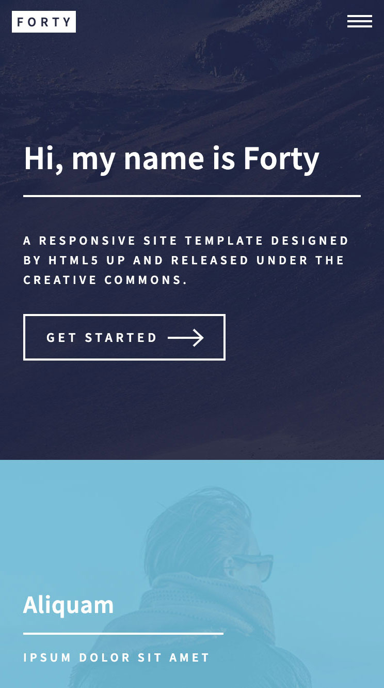
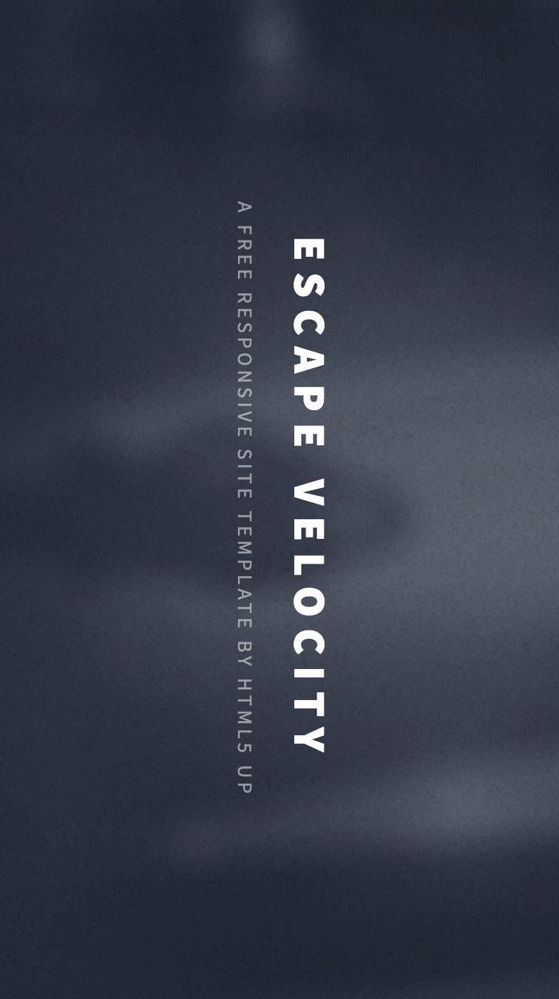
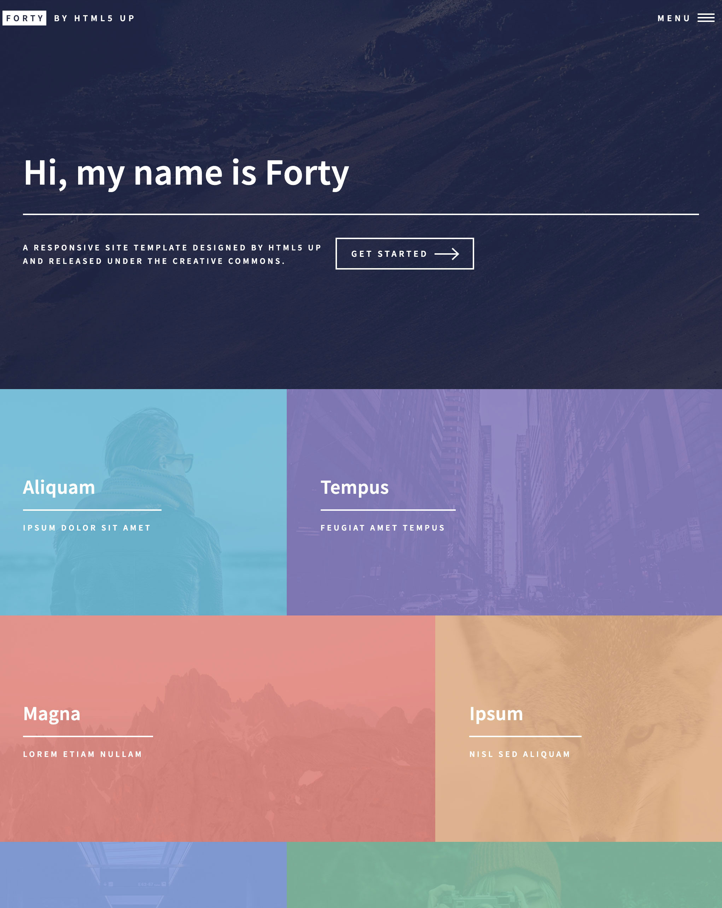

TIMELINE DEMO
AN EXPERIMENT BY PICASSO
Or better yet, a realistic example of showcasing some design work.



Really, anything is possible …
AN EXPERIMENT BY PICASSO
Or better yet, a realistic example of showcasing some design work.
Really, anything is possible …